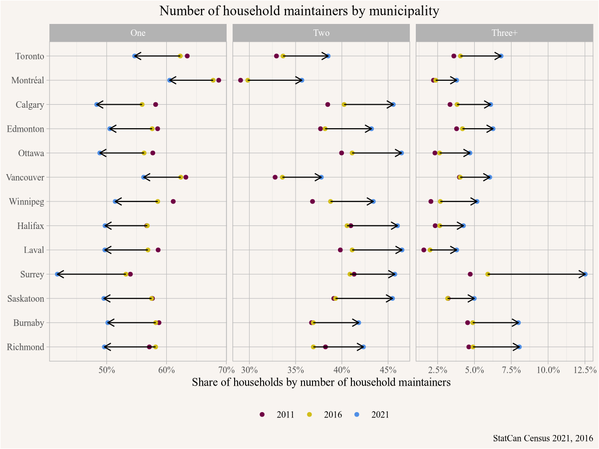

library(tidyverse)
library(cancensus)12 Number of Household Maintainers
In a recent newspaper article it was reported that
New Statistics Canada data show that households with three or more people contributing to shelter costs and other expenses grew 61 per cent compared with the overall household growth in the City of Vancouver in the past five years.
Reading this we might be interested in more context.
12.1 Question
How has the number of household maintainers changed in other municipalities, and what does this mean?
12.2 Data sources
The number of household maintainers is reported in the census:
Refers to whether or not a person residing in the household is responsible for paying the rent, or the mortgage, or the taxes, or the electricity or other services or utilities. Where a number of people may contribute to the payments, more than one person in the household may be identified as a household maintainer. If no person in the household is identified as making such payments, the reference person is identified by default.
The census dictionary indicates that the ability to identify more than one household maintainer started with the 1996 census moving forward.
12.3 Data acquisition
We need the tidyverse and cancensus packages,
and choose the appropriate census variables and decide what regions we are interested in. Moreover, we need to decide how long a timeframe we are interested in, the news article only referred to the 2016-2021 timeframe, but it might be worthwhile to also consider longer timeframes. The standard census profile data does not report on this before 2011 though, to keep things simple we collect data for the censuses 2011 and onward. We start by collecting the relevant census variables, labelled by base for the base number of households, and One, Two, and Three+ for 1, 2 or 3+ household maintainers.
vectors <- list(
"2011"=c(base="v_CA11N_2259",One="v_CA11N_2260",Two="v_CA11N_2261","Three+"="v_CA11N_2262"),
"2016"=c(base="v_CA16_4873",One="v_CA16_4874",Two="v_CA16_4875","Three+"="v_CA16_4876"),
"2021"=c(base="v_CA21_4275",One="v_CA21_4276",Two="v_CA21_4277","Three+"="v_CA21_4278")
)Selecting regions to compare Vancouver to is somewhat subjective. We go with a mix of larger cities in Metro Vancouver, as well as some from other provinces. One complication is that census geographies can change over time, so we need to be mindful of this. It is good practice to check this against the list of cities that changed 2011 to 2016 and 2016 to 2021, or explicitly inspect the geographies for changes.
We select from the list of all cities of at least 205k people (a number chosen to separate Richmond, BC from Richmond Hill, ON), and within that list narrow it down by matching by name.
regions <- list_census_regions("CA21") |>
filter(level=="CSD",
pop>205000,
grepl("Vancouver|Surrey|Burnaby|Richmond|Toronto|Calgary|Edmonton|Halifax|Winnipeg|Saskatoon|Montréal|Ottawa|Laval",name))
regions# A tibble: 13 × 8
region name level pop municipal_status CMA_UID CD_UID PR_UID
<chr> <chr> <chr> <int> <chr> <chr> <chr> <chr>
1 3520005 Toronto CSD 2794356 C 35535 3520 35
2 2466023 Montréal CSD 1762949 V 24462 2466 24
3 4806016 Calgary CSD 1306784 CY 48825 4806 48
4 3506008 Ottawa CSD 1017449 CV 505 3506 35
5 4811061 Edmonton CSD 1010899 CY 48835 4811 48
6 4611040 Winnipeg CSD 749607 CY 46602 4611 46
7 5915022 Vancouver CSD 662248 CY 59933 5915 59
8 5915004 Surrey CSD 568322 CY 59933 5915 59
9 1209034 Halifax CSD 439819 RGM 12205 1209 12
10 2465005 Laval CSD 438366 V 24462 2465 24
11 4711066 Saskatoon CSD 266141 CY 47725 4711 47
12 5915025 Burnaby CSD 249125 CY 59933 5915 59
13 5915015 Richmond CSD 209937 CY 59933 5915 59 This leaves us with 13 cities, and manual inspection shows that only Edmonton had a boundary change affecting population, resulting in a gain of 542 people 2016-2021. This should not make a noticeable difference for our analysis, so we will ignore this.
maintainer_data <- bind_rows(
get_census("CA11",regions=as_census_region_list(regions), vectors=vectors[["2011"]]) |>
mutate(Year="2011"),
get_census("CA16",regions=as_census_region_list(regions), vectors=vectors[["2016"]]) |>
mutate(Year="2016"),
get_census("CA11",regions=as_census_region_list(regions), vectors=vectors[["2021"]]) |>
mutate(Year="2021")
) |>
select(GeoUID,Year,base,One,Two,`Three+`) |>
left_join(regions |> select(GeoUID=region,Name=name),by="GeoUID")Getting the data for the three censuses and our selection of regions is easy, we join on the region names to make sure we have a uniform way to format and spell the names.
12.4 Data preparation
We are interested in shares rather than absolute numbers, for this we change the three different maintainer categories to long form and compute shares.
maintainer_levels <- c("One","Two","Three+")
plot_data <- maintainer_data |>
pivot_longer(maintainer_levels, names_to="Maintainers",values_to = "Value") |>
mutate(Share=Value/base) 12.5 Analysis and visualization
To visualize the data it can be useful to be deliberate about the order of variables. In R we preferably use factors to deal with categorical data, and the factor levels can be set to fix their order in visualizations.
name_order <- plot_data |>
filter(Year=="2021",Maintainers=="One") |>
arrange(Value) |>
pull(Name)
plot_data <- plot_data |>
mutate(Name=factor(Name,name_order)) |>
mutate(Maintainers=factor(Maintainers, levels = maintainer_levels))With that in place we can plot the data. We are in particular interested in the change from 2016 to 2021, so we add in an arrow to emphasize this.
plot_data |>
select(Name,Year,Maintainers,Share) |>
ggplot(aes(y=Name, x=Share)) +
geom_point(aes(colour=Year)) +
scale_colour_manual(values=sanzo::trios$c157) +
theme(legend.position = "bottom") +
facet_wrap(~Maintainers,scales="free_x") +
geom_segment(data=~pivot_wider(.,names_from = Year,values_from = Share),
aes(x=`2016`,xend=`2021`,yend=Name),
arrow = arrow(length = unit(0.1,"inches"))) +
scale_x_continuous(labels=scales::percent) +
labs(title="Number of household maintainers by municipality",
y=NULL,x="Share of households by number of household maintainers",
colour=NULL,
caption="StatCan Census 2021, 2016")
To add the segments we took the plot data and pivoted it wider by Year, allowing us to select the start and endpoints for our arrows indicating the movement 2016 to 2021.
Looking at the graph for 2011 to 2016 we notice a general decrease in the share of one-person maintainer households, coupled with an increase in both two and three-person maintainer households. But this trend is not uniform and is at least partially reversed for some cities, for example Saskatoon or Halifax. But for 2016 to 2021 the trends are very large and uniform. To the extend that one gets suspicious, demographic changes usually happen gradually and don’t show strong across the board changes like this. Either something big has happened, or we have some data issues.
At this point we should go back a step and try to understand what is going on here.
12.6 Analysis (revisited)
Let’s try and understand what processes could be driving differences or changes in the number of household maintainers. Household size is a large factor, one person households can have at most one household maintainer. Similarly, a two-person household can have at most two household maintainers. We can try to filter some of this effect out by looking only at two or more person households, that might give a clearer picture of what is going on.
12.7 Data acquisition (revisited)
For this we need data on the number of one-person households for the three years. The process is easily adapted from the code above.
vectors2 <- list(
"2011"=c(`One person households`="v_CA11F_210"),
"2016"=c(`One person households`="v_CA16_419"),
"2021"=c(`One person households`="v_CA21_444")
)
household_size_data <- bind_rows(
get_census("CA11",regions=as_census_region_list(regions), vectors=vectors2[["2011"]]) |>
mutate(Year="2011"),
get_census("CA16",regions=as_census_region_list(regions), vectors=vectors2[["2016"]]) |>
mutate(Year="2016"),
get_census("CA11",regions=as_census_region_list(regions), vectors=vectors2[["2021"]]) |>
mutate(Year="2021")
) |>
select(GeoUID,Year,`One person households`)Now we need to combine the data on household maintainers with the data on one-person households, which we do by joining the data frames by geographic identifier and year. Then we subtract out one-person households from the denominator and the numerator of single maintainer households, and proceed as before.
plot_data2 <- maintainer_data |>
full_join(household_size_data,by=c("GeoUID","Year")) |>
mutate(base=base-`One person households`,
`One`=`One`-`One person households`) |>
pivot_longer(maintainer_levels, names_to="Maintainers",values_to = "Value") |>
mutate(Share=Value/base) %>%
mutate(Name=factor(Name,filter(.,Year=="2021",Maintainers=="One") |>
arrange(Value) |>
pull(Name))) |>
mutate(Maintainers=factor(Maintainers, levels = maintainer_levels))12.8 Visualization (revisited)
For visualization we copy the code from before and add in a subtitle to indicate that we excluded one-person households.
plot_data2 |>
select(Name,Year,Maintainers,Share) |>
ggplot(aes(y=Name, x=Share)) +
geom_point(aes(colour=Year)) +
scale_colour_manual(values=sanzo::trios$c157) +
theme(legend.position = "bottom") +
facet_wrap(~Maintainers,scales="free_x") +
geom_segment(data=~pivot_wider(.,names_from = Year,values_from = Share),
aes(x=`2016`,xend=`2021`,yend=Name),
arrow = arrow(length = unit(0.1,"inches"))) +
scale_x_continuous(labels=scales::percent) +
labs(title="Number of household maintainers by municipality",
subtitle="Excluding one-person households",
y=NULL,x="Share of households by number of household maintainers",
colour=NULL,
caption="StatCan Census 2021, 2016")Dropping one-person households does remove some of the variation between cities, but it amplifies the effect of the drop in single maintainer households 2016-2021, while the change for 2011-2016 is still ambiguous, although in most cases also dropping. It’s hard to imagine what processes could cause such large change across all these cities. Shifting demographics, like Millennials aging into family formation years and coupling up could have some effect, but not of this magnitude. Changes in housing affordability, and people coupling or tripling up to pay for housing could also cause some shift, but these kind of shifts happen more gradually and won’t affect such a large share of households.
This is a bit of a puzzle, time to dig a little deeper at the data sources.
12.9 Data sources (revisited)
We have looked through the census dictionary and found no indication that the concept of the number of household maintainers changed over our time period, with a minor caveat that 2011 data is from the voluntary National Household Survey instead of the mandatory long form census.
For the 2011 NHS and 2016 census the information on the number of household maintainers comes from the first question on the dwelling section, Question E1 and F1, respectively.
In the 2011 NHS the question reads:
E1 Who pays the rent or mortgage, taxes, electricity, etc., for this dwelling?
1: Person 1
2: Person 2
3: Person 3
4: Person 4
5: Person 5
6: A person who is listed on another questionnaire for this dwelling
7: A person who does not live here
In the 2016 census the question reads identical, except it received an additional instruction on how to answer if more than one person contributes.
F1. Who pays the rent or mortgage, taxes, electricity, etc., for this dwelling?
If more than one person contributes to such payments, mark as many circles as apply.
1: Person 1
2: Person 2
3: Person 3
4: Person 4
5: Person 5
6: A person who is listed on another questionnaire for this dwelling
7: A person who does not live here
This change in instruction could impact how people answer this question, plausibly increasing the number of people listing multiple people as household maintainers. This taints the overall drop in single household maintainers that we observed in the data 2011-2016.
For the 2021 census the question on household maintainers has been removed from the dwelling section and added to the section that is to be separately filled out for every person in the household. It is not question 58 of part D, which reads.
58. Does this person pay, partly or entirely, the rent or mortgage, taxes, electricity, etc. for this dwelling?
Mark “Yes” if this person pays the rent or mortgage, taxes, electricity, etc. for this dwelling, even if more than one person contributes to such payments.
A dwelling is a separate set of living quarters with a private entrance from the outside or from a common hallway or stairway inside the building. This entrance should not be through someone else’s living quarters.
Do not consider payments for other dwellings such as the school residence of a child, the residence of a former spouse, or another dwelling that you may own or rent.
Yes
No
This change is substantial, in 2021 the status as a household maintainer needed to be explicitly determined for every person, whereas in the previous years it had to be marked on a list of people that some respondents may have misread as just requiring to list the main contributor to rent or mortgage, taxes, electricity, etc.
12.10 Interpretation
The number of household maintainer variable is not comparable across the 2016 to 2021 censuses, and may also be somewhat tainted for comparisons 2011 to 2016. We observe large changes in the shares of single and multiple household maintainer households 2016 to 2021 that are very likely dominated by changes to the census questionnaire.
Comparisons across regions for fixed years can still be informative, with data prior to 2021 likely being tainted by people misreading the question and selecting only one household maintainer where they should have selected more than one. Composition of households by household size also matter, removing one-person household when computing shares can remove some of the bias introduced by some municipalities having a significantly higher share of one-person households than others. This effect is particularly strong when comparing Vancouver and Surrey.
It would be worthwhile to look deeper into what drives three or more household maintainer households, either using cross tabulations or PUMF data. Surrey’s high share of multigenerational households is a likely contributor to Surrey’s high share of three or more household maintainer households.
This exercise serves as a good reminder to be suspicious of implausibly large effects in data. Most probably these arise as a result of errors in the data analysis process, but may also come about due to changes in definitions or in the data generation process, in this case the questionnaire.